Jato do jogador
O caça do jogador em cada estilo, com os quadros de inclinação das asas usados ao virar.
jato_vetor_esq_max.png 156×168 px
Classic, Modern, Ocean
Asa que desce encurta e escurece; a cabine desliza para o lado da curva. drawJet(bank = -1).
jato_vetor_esq.png 156×168 px
Classic, Modern, Ocean
Asa que desce encurta e escurece; a cabine desliza para o lado da curva. drawJet(bank = -0.5).
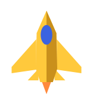
jato_vetor_nivel.png 156×168 px
Classic, Modern, Ocean
Asa que desce encurta e escurece; a cabine desliza para o lado da curva. drawJet(bank = 0).
jato_vetor_dir.png 156×168 px
Classic, Modern, Ocean
Asa que desce encurta e escurece; a cabine desliza para o lado da curva. drawJet(bank = 0.5).
jato_vetor_dir_max.png 156×168 px
Classic, Modern, Ocean
Asa que desce encurta e escurece; a cabine desliza para o lado da curva. drawJet(bank = 1).
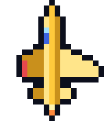
jato_retro_m4.png 152×176 px
Retro Ocean
Um dos 9 quadros intermediários de inclinação (−4 a +4). jetSprite(-4).
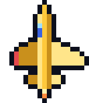
jato_retro_m3.png 152×176 px
Retro Ocean
Um dos 9 quadros intermediários de inclinação (−4 a +4). jetSprite(-3).
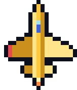
jato_retro_m2.png 152×176 px
Retro Ocean
Um dos 9 quadros intermediários de inclinação (−4 a +4). jetSprite(-2).
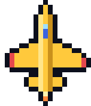
jato_retro_m1.png 152×176 px
Retro Ocean
Um dos 9 quadros intermediários de inclinação (−4 a +4). jetSprite(-1).
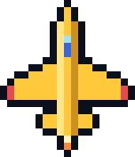
jato_retro_p0.png 152×176 px
Retro Ocean
Um dos 9 quadros intermediários de inclinação (−4 a +4). jetSprite(0).
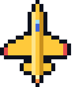
jato_retro_p1.png 152×176 px
Retro Ocean
Um dos 9 quadros intermediários de inclinação (−4 a +4). jetSprite(1).
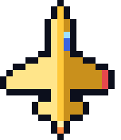
jato_retro_p2.png 152×176 px
Retro Ocean
Um dos 9 quadros intermediários de inclinação (−4 a +4). jetSprite(2).
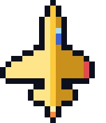
jato_retro_p3.png 152×176 px
Retro Ocean
Um dos 9 quadros intermediários de inclinação (−4 a +4). jetSprite(3).
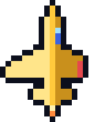
jato_retro_p4.png 152×176 px
Retro Ocean
Um dos 9 quadros intermediários de inclinação (−4 a +4). jetSprite(4).
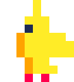
jato_pico_m2.png 108×120 px
CLASSIC - PICO-8
Um dos 5 quadros de inclinação, paleta de 16 cores. jetP8(-2).
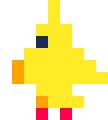
jato_pico_m1.png 108×120 px
CLASSIC - PICO-8
Um dos 5 quadros de inclinação, paleta de 16 cores. jetP8(-1).
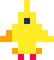
jato_pico_p0.png 108×120 px
CLASSIC - PICO-8
Um dos 5 quadros de inclinação, paleta de 16 cores. jetP8(0).
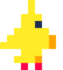
jato_pico_p1.png 108×120 px
CLASSIC - PICO-8
Um dos 5 quadros de inclinação, paleta de 16 cores. jetP8(1).
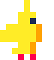
jato_pico_p2.png 108×120 px
CLASSIC - PICO-8
Um dos 5 quadros de inclinação, paleta de 16 cores. jetP8(2).
Helicópteros
Helicópteros inimigos; a hélice gira em quadros e a altitude muda o tamanho.
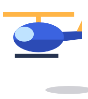
heli_lado_q0.png 180×204 px
Classic, Modern
Cabine azul com vidro, cauda e esquis. drawHeli().
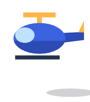
heli_lado_q3.png 180×204 px
Classic, Modern
Cabine azul com vidro, cauda e esquis. drawHeli().
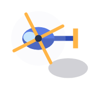
heli_cima.png 220×220 px
Ocean
Cabine em gota e disco do rotor girando. drawHeliTop(alt = 1).
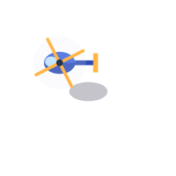
heli_cima_baixo.png 220×220 px
Ocean
Menor e com sombra mais perto. drawHeliTop(alt = 0,6).
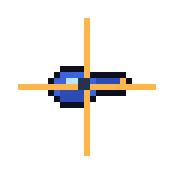
heli_pixel_q0.png 174×174 px
Retro Ocean
Um dos 4 quadros do rotor. heliSprite().
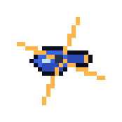
heli_pixel_q1.png 174×174 px
Retro Ocean
Um dos 4 quadros do rotor. heliSprite().
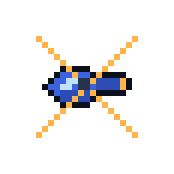
heli_pixel_q2.png 174×174 px
Retro Ocean
Um dos 4 quadros do rotor. heliSprite().
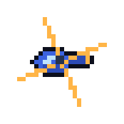
heli_pixel_q3.png 174×174 px
Retro Ocean
Um dos 4 quadros do rotor. heliSprite().
heli_pico_q0.png 168×96 px
CLASSIC - PICO-8
HELI_P8 + HELI_BODY.
heli_pico_q1.png 168×96 px
CLASSIC - PICO-8
HELI_P8 + HELI_BODY.
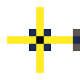
heli_pico_cima_q0.png 132×132 px
OCEAN - PICO-8
heliTopP8().
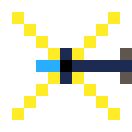
heli_pico_cima_q1.png 132×132 px
OCEAN - PICO-8
heliTopP8().
Aviões e caças
Aviões que cruzam a tela e os caças das esquadrilhas.
aviao_azul.png 189×105 px
Classic, Modern
Flecha azul-clara que cruza o rio. drawPlane().
caca_vermelho.png 189×105 px
Ocean
Flecha vermelha que voa em formação e atira. drawPlane(FLIER_PAL).
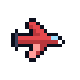
caca_pixel_0.png 132×132 px
Retro Ocean
Uma das 32 rotações pré-calculadas. fighterSprite().
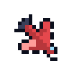
caca_pixel_45.png 132×132 px
Retro Ocean
Uma das 32 rotações pré-calculadas. fighterSprite().
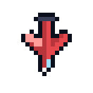
caca_pixel_90.png 132×132 px
Retro Ocean
Uma das 32 rotações pré-calculadas. fighterSprite().
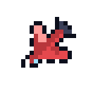
caca_pixel_135.png 132×132 px
Retro Ocean
Uma das 32 rotações pré-calculadas. fighterSprite().
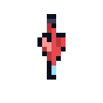
caca_pixel_parafuso1.png 132×132 px
Retro Ocean
Quadros do giro no próprio eixo. fighterSprite(roll = 1).
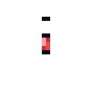
caca_pixel_parafuso2.png 132×132 px
Retro Ocean
Quadros do giro no próprio eixo. fighterSprite(roll = 2).
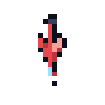
caca_pixel_parafuso3.png 132×132 px
Retro Ocean
Quadros do giro no próprio eixo. fighterSprite(roll = 3).
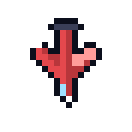
caca_pixel_parafuso4.png 132×132 px
Retro Ocean
Quadros do giro no próprio eixo. fighterSprite(roll = 4).
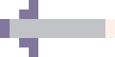
aviao_pico.png 144×72 px
CLASSIC - PICO-8
PLANE_P8.
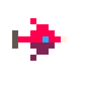
caca_pico_0.png 168×168 px
OCEAN - PICO-8
Uma das 16 rotações. FIGHTER_P8 + p8rot().
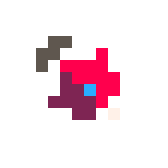
caca_pico_45.png 168×168 px
OCEAN - PICO-8
Uma das 16 rotações. FIGHTER_P8 + p8rot().
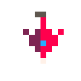
caca_pico_90.png 168×168 px
OCEAN - PICO-8
Uma das 16 rotações. FIGHTER_P8 + p8rot().
Tanques
Tanques de guerra vistos de lado, na margem ou atravessando a ponte.
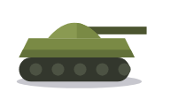
tanque_dir.png 192×112 px
Classic, Modern
Esteira com rodas, casco oliva, cúpula e canhão. drawTank(aim = 1).
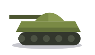
tanque_esq.png 192×112 px
Classic, Modern
drawTank(aim = −1).
tanque_pico.png 120×60 px
CLASSIC - PICO-8
TANK_P8.
Balões
Balões de ar quente que flutuam devagar.
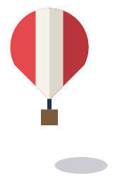
balao_lado_0.png 170×260 px
Classic, Modern
Envelope listrado, cordas e cesto. drawBalloon().
balao_cima_0.png 240×250 px
Ocean
Gomos e cesto no centro; sombra longe. drawBalloonTop().
balao_pixel_0.png 150×150 px
Retro Ocean
Um dos quadros de gomos girando. balloonSprite().
balao_pico_0.png 120×144 px
CLASSIC - PICO-8
BALLOON_P8.
balao_pico_cima_0.png 98×98 px
OCEAN - PICO-8
Gomos girando (2 quadros). balloonTopP8().
balao_lado_1.png 170×260 px
Classic, Modern
Envelope listrado, cordas e cesto. drawBalloon().
balao_cima_1.png 240×250 px
Ocean
Gomos e cesto no centro; sombra longe. drawBalloonTop().
balao_pixel_1.png 150×150 px
Retro Ocean
Um dos quadros de gomos girando. balloonSprite().
balao_pico_1.png 120×144 px
CLASSIC - PICO-8
BALLOON_P8.
balao_pico_cima_1.png 98×98 px
OCEAN - PICO-8
Gomos girando (2 quadros). balloonTopP8().
Chefes (aviões gigantes)
Os quatro chefes do oceano, com as variações de defesa.
chefe_bombardeiro.png 600×450 px
Ocean, Retro Ocean
Quatro motores com hélices, asas com pontas laranja, nariz de vidro.
chefe_canhoneira.png 600×450 px
Ocean, Retro Ocean
Asa delta escura, motores de brilho ciano e pods de foguete.
chefe_canhoneira_escudo.png 600×450 px
Ocean, Retro Ocean
Arco de energia que rebate tiros vindos de baixo.
chefe_dirigivel.png 600×450 px
Ocean, Retro Ocean
Envelope listrado, gôndola com hélices e 4 torres; anel dourado = núcleo blindado.
chefe_dirigivel_avariado.png 600×450 px
Ocean, Retro Ocean
Sem torres, o núcleo fica vulnerável.
chefe_interceptador.png 600×450 px
Ocean, Retro Ocean
Caça enflechado preto e vermelho com pós-combustão.
chefe_interceptador_mira.png 600×450 px
Ocean, Retro Ocean
Linha tracejada vermelha até o alvo antes do mergulho.
Itens e power-ups
Combustível (postos de abastecimento) e os power-ups coletáveis.
combustivel_lado.png 132×192 px
Classic, Modern
Galão vermelho com faixa "FUEL". drawFuel().
combustivel_cima.png 132×192 px
Ocean
Dois tanques redondos marcados "F". drawFuelTop().
combustivel_pixel.png 108×156 px
Retro Ocean
fuelSprite().
combustivel_pico.png 72×144 px
CLASSIC - PICO-8
FUEL_P8.
bomba_hud_pico.png 168×84 px
OCEAN - PICO-8
Acesa e gasta. bombP8().
pu_shield.png 204×204 px
Modern, Ocean
Quadrado com ícone e halo pulsando. drawPowerup().
pu_pixel_shield.png 112×112 px
Retro Ocean
puSprite().
pu_pico_shield.png 84×84 px
MODERN / OCEAN - PICO-8
Caixa 7×7 com ícone. puP8().
pu_triple.png 204×204 px
Modern, Ocean
Quadrado com ícone e halo pulsando. drawPowerup().
pu_pixel_triple.png 112×112 px
Retro Ocean
puSprite().
pu_pico_triple.png 84×84 px
MODERN / OCEAN - PICO-8
Caixa 7×7 com ícone. puP8().
pu_rapid.png 204×204 px
Modern, Ocean
Quadrado com ícone e halo pulsando. drawPowerup().
pu_pixel_rapid.png 112×112 px
Retro Ocean
puSprite().
pu_pico_rapid.png 84×84 px
MODERN / OCEAN - PICO-8
Caixa 7×7 com ícone. puP8().
pu_bomb.png 204×204 px
Modern, Ocean
Quadrado com ícone e halo pulsando. drawPowerup().
pu_pixel_bomb.png 112×112 px
Retro Ocean
puSprite().
pu_pico_bomb.png 84×84 px
MODERN / OCEAN - PICO-8
Caixa 7×7 com ícone. puP8().
pu_life.png 204×204 px
Modern, Ocean
Quadrado com ícone e halo pulsando. drawPowerup().
pu_pixel_life.png 112×112 px
Retro Ocean
puSprite().
pu_pico_life.png 84×84 px
MODERN / OCEAN - PICO-8
Caixa 7×7 com ícone. puP8().
Projéteis
Tiros do jogador e dos inimigos.
missil.png 80×140 px
todos
Cápsula amarela com ponta branca (sai em rajadas de 10).
tiro_inimigo.png 240×128 px
todos
Rastro amarelo→vermelho, halo vermelho, corpo laranja e núcleo branco. drawShell().
foguete.png 240×128 px
Ocean
Persegue o jato (canhoneira). drawShell(kind = rocket).
mina.png 160×160 px
Ocean
Esfera com espetos e luz piscando (dirigível). drawShell(kind = mine).
tiro_pico.png 42×42 px
OCEAN - PICO-8
Cruz 3×3 piscando (2 quadros). BULLET_P8.
tiro_pixel.png 70×70 px
Retro Ocean
bulletSprite().
Construções e cenário
Casas, árvores, campos e animais das margens e ilhas.
casa_telhado_escuro.png 228×150 px
Classic, Modern
Parede creme, porta e janela. drawHouse(house1).
casa_telhado_vermelho.png 228×150 px
Classic, Modern
Variação espelhada. drawHouse(house2).
arvore_redonda_escura.png 128×192 px
Classic, Modern
Vista de lado. drawTree().
arvore_redonda_clara.png 128×192 px
Classic, Modern
Vista de lado. drawTree().
arvore_pinheiro_escura.png 128×192 px
Classic, Modern
Vista de lado. drawTree().
arvore_pinheiro_clara.png 128×192 px
Classic, Modern
Vista de lado. drawTree().
arvore_cima.png 144×144 px
Ocean
Copa redonda das ilhas do oceano. drawTreeTop().
pasto_com_vacas.png 310×180 px
Classic, Modern
Campo com cerca fina. drawField() + drawCow().
vaca.png 140×110 px
Classic, Modern
Malhada, vista de lado. drawCow().
vaca_pastando.png 140×110 px
Classic, Modern
Cabeça baixa. drawCow().
arvore_pico_redonda_escura.png 42×56 px
CLASSIC - PICO-8
treeP8().
arvore_pico_redonda_clara.png 42×56 px
CLASSIC - PICO-8
treeP8().
arvore_pico_pinheiro_escura.png 42×70 px
CLASSIC - PICO-8
treeP8().
arvore_pico_pinheiro_clara.png 42×70 px
CLASSIC - PICO-8
treeP8().
vaca_pico.png 56×42 px
CLASSIC - PICO-8
COW_P8.
casa_pico_1.png 216×108 px
CLASSIC - PICO-8
HOUSE_P8.house1.
casa_pico_2.png 216×108 px
CLASSIC - PICO-8
HOUSE_P8.house2.
Nuvens
Os quatro tipos de nuvem do oceano (recortes desenhados sobre o mar).
nuvem_puff.png 501×432 px
Ocean, Retro Ocean
Base sombreada e flocos brancos, com a sombra projetada no mar. getClouds().
nuvem_bank.png 384×758 px
Ocean, Retro Ocean
Base sombreada e flocos brancos, com a sombra projetada no mar. getClouds().
nuvem_wisp.png 251×540 px
Ocean, Retro Ocean
Base sombreada e flocos brancos, com a sombra projetada no mar. getClouds().
nuvem_tower.png 273×501 px
Ocean, Retro Ocean
Base sombreada e flocos brancos, com a sombra projetada no mar. getClouds().
Ilhas
Ilhas do rio e os quatro tipos de ilha do oceano (recortes do jogo).
ilha_oceano_long.png 216×452 px
Ocean
Gerada pelo mapa do oceano: praia de areia, mato e árvores vistas de cima.
ilha_oceano_chain.png 87×108 px
Ocean
Gerada pelo mapa do oceano: praia de areia, mato e árvores vistas de cima.
ilha_oceano_atoll.png 273×272 px
Ocean
Gerada pelo mapa do oceano: praia de areia, mato e árvores vistas de cima.
ilha_oceano_round.png 246×136 px
Ocean
Gerada pelo mapa do oceano: praia de areia, mato e árvores vistas de cima.
ilha_rio.png 130×180 px
Classic, Modern
Ilha oval no meio do rio, com pontas arredondadas e árvores de lado.
Terreno: rio, margens, paredões e pontes
Recortes do mapa gerado.
rio_margens.png 608×400 px
Classic, Modern
Rio simétrico com água rasa, sombra na beira e decoração das margens.
ponte.png 608×200 px
Classic, Modern
Estrada com faixa amarela tracejada e deck de madeira sobre o rio.
ponte_destruida.png 608×200 px
Classic, Modern
Só as pontas quebradas; a água aparece no vão.
paredoes.png 608×440 px
Modern
Rocha clara com face para o rio, pedras salientes e sombra.
mar_ondas.png 480×320 px
Ocean
Água azul-oceano com marolas animadas.
Explosões e efeitos
Cada explosão em 4 quadros (da esquerda para a direita), como no jogo.
explosao_ship.png 720×180 px
Classic, Modern, Ocean (o Retro pixeliza)
Receita FX.ship — quadros 2, 9, 21, 35.
explosao_heli.png 720×180 px
Classic, Modern, Ocean (o Retro pixeliza)
Receita FX.heli — quadros 2, 10, 23, 38.
explosao_plane.png 720×180 px
Classic, Modern, Ocean (o Retro pixeliza)
Receita FX.plane — quadros 2, 7, 15, 26.
explosao_fuel.png 720×180 px
Classic, Modern, Ocean (o Retro pixeliza)
Receita FX.fuel — quadros 2, 13, 29, 48.
explosao_tank.png 720×180 px
Classic, Modern, Ocean (o Retro pixeliza)
Receita FX.tank — quadros 2, 11, 25, 42.
explosao_balloon.png 720×180 px
Classic, Modern, Ocean (o Retro pixeliza)
Receita FX.balloon — quadros 2, 14, 32, 53.
explosao_bridge.png 1120×280 px
Classic, Modern, Ocean (o Retro pixeliza)
Receita FX.bridge — quadros 2, 14, 32, 53.
explosao_carrier.png 1120×280 px
Classic, Modern, Ocean (o Retro pixeliza)
Receita FX.carrier — quadros 2, 16, 36, 60.
explosao_player.png 720×180 px
Classic, Modern, Ocean (o Retro pixeliza)
Receita FX.player — quadros 2, 13, 29, 48.
coleta_powerup.png 720×180 px
Modern, Ocean
Anéis na cor do item, estrelinhas e o nome subindo.
bomba.png 880×220 px
Ocean, Retro Ocean
Clarão, três ondas de choque, raios de luz, fumaça e faíscas.
Telas completas
Uma captura de cada modo, com HUD.
tela_titulo.png 608×736 px
—
Escolha dos 7 modos.
tela_classic.png 608×736 px
CLASSIC
tela_modern.png 608×736 px
MODERN
tela_ocean_rasante.png 480×640 px
OCEAN
tela_ocean_alto.png 480×640 px
OCEAN
tela_retro.png 480×640 px
RETRO OCEAN
tela_pico.png 512×512 px
CLASSIC - PICO-8
tela_pmodern.png 512×512 px
MODERN - PICO-8
tela_pocean_rasante.png 512×512 px
OCEAN - PICO-8
tela_pocean_alto.png 512×512 px
OCEAN - PICO-8